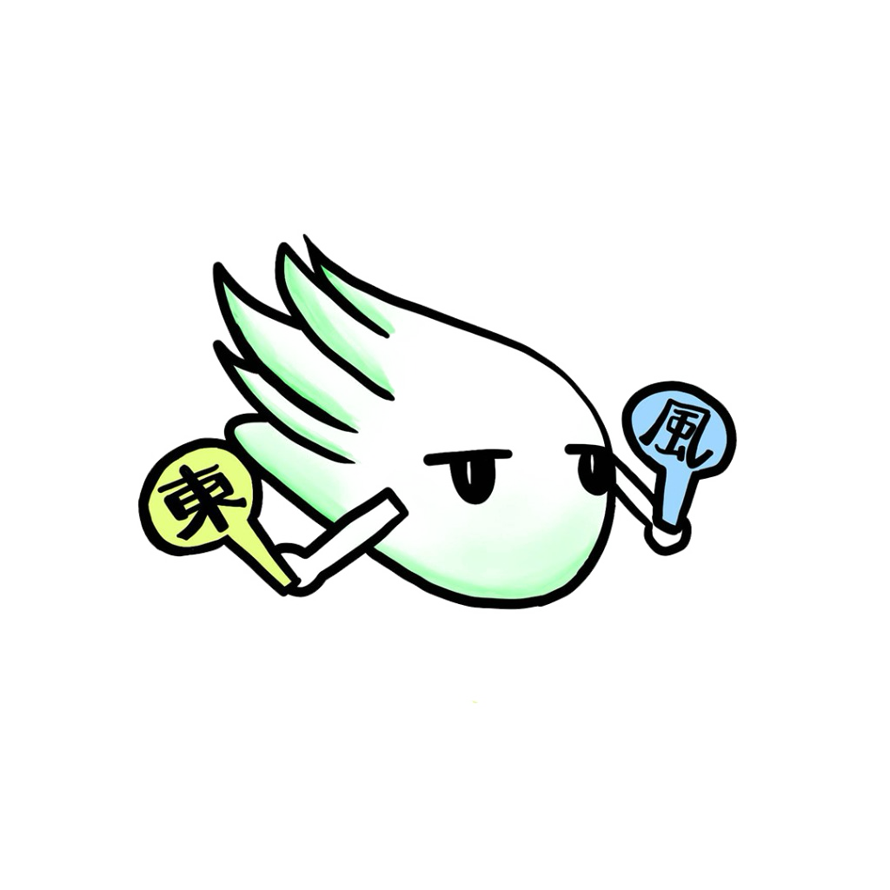

〜 未来を迎えに行こう。私の「好き」がひらく一日 〜

創立80周年記念文化祭 公式特設サイトを公開しました！
※追加プログラムや最新情報は、本コーナーにて順次公開、アップデートしてまいります。
【第1部】10:00 〜 15:00（一般公開・どなたでも来場可）
【第2部】15:30 〜 17:15（全校生徒記念イベント／在校生限定・非公開）
【フィナーレ】17:30頃 〜（創立80周年記念花火／在校生限定・任意参加）
校庭・体育館・校舎内・視聴覚室 等
創立80周年記念文化祭に関するお問い合わせは、学校（教職員）ではお受けできません。
すべて下記【創立80周年記念事業実行委員会】専用フォームよりお願いいたします。
※ご送信いただいた内容は実行委員会にて確認のうえ、ご入力いただいたメールアドレス宛に折り返しご返信いたします。
女子バスケットボール元日本代表・東京オリンピック銀メダリストの宮崎早織さんが、創立80周年のお祝いに母校へ駆けつけてくださいます！
地域ミニバス選手を対象とした特別講習会（協賛：青少年育成さいたま市民会議 与野東地区会／参加費無料）。
※対象となる地域のミニバス団体様へ直接ご案内をお送りいたします。
※当日の模様は後日、本サイトにて写真レポートを公開予定です。
（タイムテーブルは後日発表）
続報乞うご期待！
地域連携コーディネーター連携による特別体験ブース！詳細コンテンツは10月中旬に公開予定です。
人気のキッチンカーがやってくる！手軽でおいしい軽食をお楽しみいただけます。指定の「飲食スペース」をご利用ください。（※出店メニュー・詳細は後日公開予定！）
女子バスケットボール元日本代表・東京オリンピック銀メダリストの宮崎早織さんをお迎えし、全校生徒で創立80周年をお祝いする特別な記念イベントを実施します！（詳細プログラムは後日公開）
※第2部は安全管理・体育館収容人数の都合上【在校生限定】となります（一般の方の入場・観覧はできません。ごめんなさい…！🙇♀️）。当日の熱気あふれる様子は後日、本サイトにて写真レポートを公開予定です！
第2部記念イベントのグランドフィナーレを飾る、在校生のための記念花火！（※雨天中止 / 任意参加 / 第2部の延長プログラムとして実施するため、一般公開はございません）
「希望（ゆめ）のバトンをつなげ、実現の未来へ！」
〜東風と歩んだ80年 これまでも、これからも〜さいたま市立与野東中学校は、生徒・保護者・地域の皆様・歴代卒業生の温かい支えを受け、創立80周年の節目を迎えました。
本文化祭は、そんな記念の1ページを皆さまと共にお祝いしたいという思いで企画されました。在校生だけでなく、小学生や卒業生、地域の皆様のご来校を心よりお待ちしております。
タイムテーブル、キッチンカー、体験ブースなど詳細は【10月中旬頃】に順次公開・アップデート予定です！